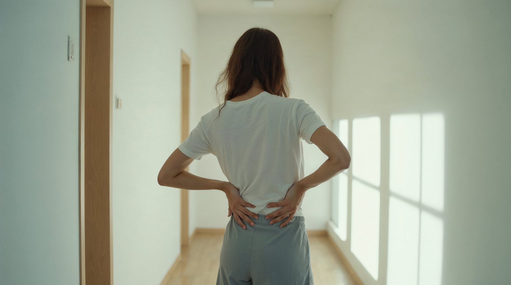

이종호 한의사 감수좋은꿈참사랑한의원 대표원장 (한의사 면허번호 19769)발행 2026-11-24 · 수정 2026-11-26
이 글의 차례
- 왜 이런 불편이 생길 수 있나요
- 굳은 허리와 다른 원인은 어떻게 나눠 볼까요?
- 택시 운전 중 자주 생기는 상황
- 스스로 점검해 보세요
- 오래 앉아 있으면 왜 내릴 때 더 굳을까요?
- 먼저 이렇게 여쭙니다
- 일상에서 먼저 해 볼 수 있는 것
- 운전석에서 할 수 있는 작은 조절
- 대기하는 동안 할 수 있는 동작
- 손님 짐을 들 때는 어떻게 할까요?
- 끼니와 물은 어떻게 챙길까요?
- 쉬는 날과 잠은 어떻게 챙길까요?
- 근무를 마치고 집에서는 어떻게 풀어 줄까요?
- 한의원에서 함께 살필 수 있는 경우
- 첫 진료에서는 이렇게 살핍니다
- 얼마나 지켜보고 언제 상담할까요?
- 계절과 날씨에 따라서도 달라질까요?
- 근무 중 기록은 이렇게 남겨 보세요
- 이렇게 기록해 오시면 상담이 쉬워집니다
- 이런 증상은 먼저 확인이 필요합니다
1~2시간마다 차에서 내려 허리를 천천히 펴고 몇 걸음 걷는 것만으로도 내릴 때의 뻣뻣함을 덜 수 있습니다. 동작구와 노량진 일대를 하루 종일 돌다 보면 차에서 내린 뒤 허리를 한참 구부정하게 있다가 겨우 펴게 되기 쉽고, 근무 중에는 화장실 갈 때 말고는 내릴 틈이 없는 날도 많습니다.
왜 이런 불편이 생길 수 있나요
- 오래 같은 자세로 앉아 있으면 허리와 골반 주변 근육이 굳어 일어설 때 바로 펴지지 않을 수 있습니다.
- 엉덩이를 앞으로 빼고 등을 둥글게 기대 앉으면 허리 아래쪽에 부담이 몰리기 쉽습니다.
- 차의 진동과 정차·출발을 반복하며 몸을 버티는 일도 허리를 피곤하게 합니다.
- 뒷주머니의 지갑은 골반을 한쪽으로 기울게 해 허리 한쪽의 긴장을 키우기도 합니다.
굳은 허리와 다른 원인은 어떻게 나눠 볼까요?
오래 앉아 있다 일어날 때 뻣뻣하다가 몇 걸음 걷고 나면 풀리는 경우는, 같은 자세로 굳은 근육과 관절이 다시 움직이며 풀리는 흐름인 경우가 많습니다. 이때는 앉는 자세와 쉬는 간격을 바꾸는 것이 먼저입니다.
걸어도 잘 풀리지 않고 엉덩이나 허벅지 뒤쪽으로 당기는 느낌이 함께 있다면 허리에서 다리로 이어지는 부위를 더 넓게 살펴봅니다. 어느 자세에서 당김이 심해지는지 적어 오시면 도움이 됩니다.
아침에 일어날 때가 가장 뻣뻣하고 낮에 움직이면 덜해지는지, 반대로 근무가 끝날수록 심해지는지도 중요합니다. 하루 중 언제 가장 불편한지에 따라 생활에서 조절할 부분이 달라집니다.
허리 한쪽만 유독 뻐근하다면 앉을 때 몸이 한쪽으로 기울어 있지 않은지 봅니다. 뒷주머니의 지갑, 한쪽 팔을 창틀에 올리는 습관, 오른발만 계속 쓰는 자세가 겹쳐 있는 경우가 있습니다.
택시 운전 중 자주 생기는 상황
- 예를 들어 공항이나 먼 곳까지 두세 시간을 쉬지 않고 달린 날에는 도착해 트렁크에서 짐을 내리는 순간 허리가 뜨끔하다고 하시는 분이 많습니다.
- 예를 들어 밤 근무로 새벽에 차 안 히터를 끄고 대기하다 보면 몸이 식은 채 굳어, 다음 손님을 태우고 내릴 때 더 뻣뻣하게 느껴지기도 합니다.
- 예를 들어 끼니를 차 안에서 김밥이나 빵으로 급히 해결하는 날이 이어지면 차에서 내릴 일이 더 줄어 허리가 쉴 틈이 없어집니다.
- 예를 들어 손님 짐을 들어 줄 때 허리를 굽힌 채 몸을 비틀어 트렁크에 넣으면, 오래 앉아 굳어 있던 허리에 부담이 한꺼번에 실리기 쉽습니다.
스스로 점검해 보세요
- 두 시간 넘게 차에서 내리지 않는 날이 많다
- 내릴 때 몸을 한 번에 돌리며 일어난다
- 엉덩이를 좌석 앞쪽에 걸치고 등을 둥글게 기대 앉는다
- 뒷주머니에 지갑을 넣은 채 운전한다
- 등받이를 뒤로 많이 눕히고 팔을 쭉 뻗어 핸들을 잡는다
- 트렁크 짐을 허리를 굽혀 한 번에 들어 올린다
- 끼니를 차 안에서 해결하는 날이 일주일에 사흘을 넘는다
- 근무가 끝난 뒤에도 허리가 한참 동안 펴지지 않는다
해당하는 항목이 많을수록 근무 중 바꿀 수 있는 것부터 하나씩 정해 보세요. 진료 때 이 목록을 보여 주시면 함께 순서를 정하기 쉽습니다. 한꺼번에 모두 바꾸려 하기보다 이번 주에는 지갑 빼기, 다음 주에는 내리는 순서 바꾸기처럼 하나씩 해 보세요.
오래 앉아 있으면 왜 내릴 때 더 굳을까요?
앉아 있는 동안 엉덩이와 허벅지 앞쪽 근육은 짧아진 채로, 허리 뒤쪽 근육은 늘어난 채로 오래 머뭅니다. 그 상태에서 갑자기 일어서면 근육들이 바로 길이를 바꾸지 못해 허리가 반쯤 굽은 채 멈칫하게 됩니다.
여기에 차의 진동이 더해지면 몸은 작은 흔들림을 버티느라 허리와 배 근육에 계속 힘을 주고 있게 됩니다. 겉으로는 가만히 앉아 있어도 근육은 쉬지 못하는 셈입니다.
그래서 한 번 길게 쉬는 것보다 짧게 자주 내려 몸의 길이를 바꿔 주는 것이 도움이 될 수 있습니다. 1~2시간마다 내리기를 권하는 이유도 여기에 있습니다.

먼저 이렇게 여쭙니다
- 하루에 운전하는 시간은 얼마나 되고, 중간에 차에서 내려 쉬는 간격은 어느 정도인가요?
- 허리가 뻣뻣한 것 말고 엉덩이나 다리로 저리거나 당기는 느낌이 있나요?
- 좌석 등받이 각도와 허리 받침은 어떻게 쓰고 계신가요?
- 아침 첫 운전 때와 근무가 끝날 무렵 가운데 언제 더 불편한가요?

일상에서 먼저 해 볼 수 있는 것
- 신호 대기 때 엉덩이를 좌석 깊숙이 넣고 등을 등받이에 붙이기
- 1~2시간마다 차에서 내려 허리를 천천히 뒤로 젖히고 잠깐 걷기
- 내릴 때는 몸을 한 번에 비틀지 말고 두 다리를 먼저 밖으로 내린 뒤 일어나기
- 지갑이나 휴대폰을 뒷주머니에 넣고 앉지 않기
운전석에서 할 수 있는 작은 조절
좌석 높이는 무릎이 엉덩이보다 살짝 낮거나 비슷하게 맞춰 보세요. 무릎이 너무 높으면 골반이 뒤로 말려 허리가 둥글게 굽기 쉽습니다.
좌석과 페달 사이 거리는 브레이크를 끝까지 밟아도 무릎이 살짝 굽어 있을 정도가 알맞습니다. 다리를 쭉 뻗어야 닿는다면 좌석을 조금 앞으로 당겨 주세요.
등받이는 너무 눕히지 말고 몸을 기댔을 때 어깨가 등받이에 닿는 정도로 세워 보세요. 핸들을 잡았을 때 팔꿈치가 살짝 굽어 있으면 어깨와 허리가 함께 편합니다.
좌석을 바꾼 뒤에는 룸미러와 사이드미러를 다시 맞춰 주세요. 거울을 보려고 목을 빼거나 몸을 기울이는 습관이 줄어들면 허리도 덜 비틀어집니다.
허리 받침이 없다면 작은 수건을 말아 허리 뒤 오목한 곳에 대 보세요. 너무 두껍지 않게 조절하면서 오래 앉아도 허리가 둥글게 무너지지 않는 정도를 찾으면 됩니다.
대기하는 동안 할 수 있는 동작
손님을 기다리는 동안 차 밖으로 나와 두 손을 허리 뒤에 대고 천천히 몸을 젖혔다 돌아오기를 몇 번 해 보세요. 통증이 날카로워지면 멈추고 범위를 줄이시면 됩니다.
차 문이나 트렁크를 짚고 발뒤꿈치를 들었다 내리기, 제자리에서 무릎을 번갈아 들어 올리기처럼 작은 동작도 다리와 골반의 혈류를 돌리는 데 도움이 될 수 있습니다.
앉은 채로는 엉덩이를 좌석 깊숙이 넣고 배에 살짝 힘을 준 채 허리를 펴는 자세를 10초쯤 유지해 보세요. 신호 대기 때마다 한 번씩 하면 부담 없이 반복하기 좋습니다.
동작을 하는 동안 숨을 참지 말고 천천히 내쉬어 주세요. 숨을 참으면 허리와 어깨에 다시 힘이 들어가 풀리는 느낌이 줄어듭니다.
손님 짐을 들 때는 어떻게 할까요?
트렁크에 짐을 넣을 때는 짐 가까이 다가가 무릎을 굽히고, 짐을 몸에 붙인 채 다리 힘으로 들어 올리세요. 허리를 굽힌 채 팔만 뻗어 드는 자세가 가장 부담이 큽니다.
짐을 든 채 몸을 비틀지 말고, 발을 먼저 돌려 몸 전체가 트렁크를 향하게 한 뒤 내려놓으세요. 무거운 캐리어는 바퀴를 이용해 트렁크 턱까지 끌고 와 한쪽을 먼저 걸치면 한 번에 들어 올리는 무게가 줄어듭니다.
오래 운전한 직후에는 허리가 굳어 있어 같은 짐도 더 무겁게 느껴질 수 있습니다. 짐을 들기 전에 몇 걸음 걸으며 허리를 한 번 펴 주시면 좋습니다.
끼니와 물은 어떻게 챙길까요?
화장실 가기가 번거로워 물을 일부러 적게 마시는 분이 있습니다. 하지만 물을 너무 적게 마시면 몸이 쉽게 지치고 근육도 더 뻣뻣하게 느껴질 수 있어, 조금씩 자주 마시시기를 권합니다.
화장실에 들르는 시간을 차에서 내려 허리를 펴는 시간으로 함께 쓰면 쉬는 간격을 따로 만들지 않아도 됩니다. 자주 가는 화장실 위치를 몇 군데 정해 두면 마음도 편해집니다.
끼니는 차 안보다 잠깐이라도 차 밖에서 드시는 날을 늘려 보세요. 식사 뒤 5분쯤 걷고 다시 운전석에 앉으면 오후 운전이 덜 무겁게 느껴지는 분이 많습니다.
쉬는 날과 잠은 어떻게 챙길까요?
근무가 길어 잠이 부족하면 같은 뻣뻣함도 더 크게 느끼기 쉽습니다. 근무 일정이 바뀌어도 잠드는 시각과 일어나는 시각을 되도록 비슷하게 유지해 보세요.
쉬는 날에 하루 종일 누워만 있으면 오히려 다음 날 허리가 더 굳는다는 분도 있습니다. 가볍게 30분쯤 걷거나 집 근처 공원을 산책하며 몸을 움직여 주세요.
잠자리에서 허리가 불편하다면 옆으로 누워 무릎 사이에 베개를 끼우거나, 똑바로 누워 무릎 밑에 쿠션을 받쳐 보세요. 허리가 편한 자세를 찾으면 잠도 덜 깨는 경우가 있습니다.
근무를 마치고 집에서는 어떻게 풀어 줄까요?
집에 오면 바로 소파에 앉기보다 미지근한 물로 씻으며 허리와 엉덩이를 따뜻하게 해 주세요. 몸이 데워진 뒤에 가볍게 움직이면 굳은 근육이 풀리기 쉽습니다.
바닥에 누워 두 무릎을 세운 뒤 양쪽으로 천천히 넘기기, 한쪽 무릎을 가슴 쪽으로 당겨 잠시 버티기처럼 부드러운 동작을 몇 번 해 보세요. 아픈 범위까지 억지로 늘리지 않는 것이 중요합니다.
다음 날 근무가 이른 경우에는 늦게까지 휴대폰을 보며 누워 있기보다 일찍 불을 끄는 쪽을 권합니다. 잠이 충분해야 다음 날 허리도 덜 무겁게 느껴지는 분이 많습니다.
오래 운전을 해 오신 분일수록 허리 불편을 일의 일부로 여기고 참고 지내는 경우가 많습니다. 불편이 일상이 되기 전에 작은 습관부터 바꿔 보시고, 혼자 버티기 어렵다면 편하게 상담하러 오세요.

한의원에서 함께 살필 수 있는 경우
- 내릴 때마다 허리가 뻣뻣하고 오래 이어지는 경우 허리와 골반, 앉는 자세를 함께 살핍니다.
- 엉덩이나 다리 쪽으로 당기거나 저린 경우 어느 동작에서 심해지는지 넓게 살핍니다.
- 운전 시간이 길어 식사와 잠이 불규칙한 경우 생활 리듬을 함께 살핍니다.
좋은꿈참사랑한의원에서는 모든 분께 맥을 짚으며 어떤 동작에서 아픈지 여쭙고, 필요하다고 판단될 때 초음파로 아픈 부위를 확인한 뒤 상태에 맞춰 침·약침·추나·온열 등을 정합니다. 귀가 전에는 집에서 지켜볼 점과 다음 진료 때 다시 확인할 동작을 알려 드립니다.
첫 진료에서는 이렇게 살핍니다
첫 진료에서는 먼저 맥을 짚으며 근무 시간, 쉬는 간격, 잠과 식사를 여쭙습니다. 그다음 앉았다 일어서기, 허리를 앞으로 숙이고 뒤로 젖히기, 좌우로 돌리기를 직접 해 보시며 어느 동작에서 불편한지 확인합니다.
골반의 높이와 걸음걸이, 운전할 때와 비슷하게 앉은 자세도 함께 봅니다. 필요하다고 판단될 때 초음파로 아픈 부위를 살피고, 침·약침·추나·온열 가운데 지금 상태에 맞는 방법을 정합니다.
근무를 쉬기 어려운 분이 많아 운전 일정을 여쭤 그 안에서 할 수 있는 방법을 먼저 찾습니다. 진료 시간이 근무와 겹친다면 쉬는 날이나 근무 교대 전후처럼 오시기 편한 때를 함께 정해 보세요. 진료를 받는 날에는 무리한 장거리 운행을 잠시 피하시면 몸을 살피기가 한결 수월합니다.
얼마나 지켜보고 언제 상담할까요?
쉬는 간격과 앉는 자세를 바꾼 뒤 1~2주 동안, 근무를 마치고 내릴 때 허리 뻣뻣함을 0~10점으로 적어 보세요. 점수가 조금씩 내려간다면 그 방법을 이어 가시면 됩니다.
바꿔 보아도 점수가 그대로이거나, 쉬는 날에도 허리가 무겁게 남아 있다면 상담을 받아 보시기를 권합니다. 엉덩이나 다리로 당기는 느낌이 점점 잦아지는 경우에도 기록을 들고 오세요.
계절과 날씨에 따라서도 달라질까요?
겨울에는 차 안이 따뜻해도 문을 열고 내리는 순간 찬 공기에 몸이 움츠러들어 허리가 더 뻣뻣해지기 쉽습니다. 허리를 덮는 겉옷을 입고, 내리기 전에 앉은 채로 허리를 한 번 펴 주세요.
여름에는 에어컨 바람이 허리와 다리 쪽으로 오래 향하면 몸이 식어 굳기 쉽습니다. 바람 방향을 몸에서 비껴가게 맞추고, 얇은 무릎 담요를 두면 도움이 될 수 있습니다.
비 오는 날은 승하차가 잦고 서둘러 타고 내리느라 몸을 급하게 비트는 일이 많아집니다. 이런 날일수록 두 다리를 먼저 내리고 일어나는 순서를 의식해 보세요.
근무 중 기록은 이렇게 남겨 보세요
운행 기록을 남기는 앱이나 수첩이 있다면 그 옆에 차에서 내린 시각을 함께 적어 보세요. 몇 시간마다 내렸는지 따로 기억하지 않아도 하루 흐름이 보입니다.
근무를 마칠 때 허리 뻣뻣함 점수와 내린 횟수를 한 줄로 적어 두면, 어떤 날 더 불편했는지 비교하기 쉽습니다. 장거리 손님이 많았던 날, 짐을 많이 들어 준 날도 표시해 두세요.
일주일쯤 모이면 쉬는 간격이 길었던 날 점수가 높았는지, 날씨나 근무 시간대와 관련이 있는지 함께 살펴볼 수 있습니다. 기록은 짧게, 꾸준히 남기는 것이 중요합니다. 진료 때 그 수첩을 그대로 보여 주셔도 됩니다.

이렇게 기록해 오시면 상담이 쉬워집니다
- 하루 운전 시간과 차에서 내려 쉬는 간격
- 허리가 가장 뻣뻣한 때(첫 운전, 근무 끝, 다음 날 아침)
- 엉덩이나 다리 저림·당김이 있는지, 어느 쪽인지
- 좌석 등받이 각도와 허리 받침 사용 여부
- 한쪽만 아픈지, 양쪽이 비슷한지
- 쉬는 날과 근무하는 날의 차이
이런 증상은 먼저 확인이 필요합니다
- 다리에 힘이 빠지거나 감각이 둔해지는 경우
- 대소변 조절이 어렵거나 사타구니 감각이 둔한 경우
이런 신호가 있으면 한의원보다 가까운 병원이나 응급실을 먼저 찾으세요.

여쭙는 것
- 하루에 운전하는 시간은 얼마나 되고, 중간에 차에서 내려 쉬는 간격은 어느 정도인가요?
- 허리가 뻣뻣한 것 말고 엉덩이나 다리로 저리거나 당기는 느낌이 있나요?
- 좌석 등받이 각도와 허리 받침은 어떻게 쓰고 계신가요?
생활에서 해 볼 것
- 신호 대기 때 엉덩이를 좌석 깊숙이 넣고 등을 등받이에 붙이기
- 1~2시간마다 차에서 내려 허리를 천천히 뒤로 젖히고 잠깐 걷기
- 내릴 때는 몸을 한 번에 비틀지 말고 두 다리를 먼저 밖으로 내린 뒤 일어나기
한의원에서 함께 살필 것
- 내릴 때마다 허리가 뻣뻣하고 오래 이어지는 경우 허리와 골반, 앉는 자세를 함께 살…
- 엉덩이나 다리 쪽으로 당기거나 저린 경우 어느 동작에서 심해지는지 넓게 살핍니다.
- 운전 시간이 길어 식사와 잠이 불규칙한 경우 생활 리듬을 함께 살핍니다.
먼저 확인이 필요한 신호
- 다리에 힘이 빠지거나 감각이 둔해지는 경우
- 대소변 조절이 어렵거나 사타구니 감각이 둔한 경우
한눈에 보는 표
| 구분 | 핵심 |
|---|---|
| 여쭙는 것 | 하루에 운전하는 시간은 얼마나 되고, 중간에 차에서 내려 쉬는 간격은 어느 정도인가요? 허리가 뻣뻣한 것 말고 엉덩이나 다리로 저리거나 당기는 느낌이 있나요? |
| 생활에서 해 볼 것 | 신호 대기 때 엉덩이를 좌석 깊숙이 넣고 등을 등받이에 붙이기 1~2시간마다 차에서 내려 허리를 천천히 뒤로 젖히고 잠깐 걷기 |
| 한의원에서 함께 살필 것 | 내릴 때마다 허리가 뻣뻣하고 오래 이어지는 경우 허리와 골반, 앉는 자세를 함께 살핍니다. 엉덩이나 다리 쪽으로 당기거나 저린 경우 어느 동작에서 심해지는지 넓게 살핍니다. |
| 먼저 확인이 필요한 신호 | 다리에 힘이 빠지거나 감각이 둔해지는 경우 대소변 조절이 어렵거나 사타구니 감각이 둔한 경우 |
자주 묻는 질문
허리 보호대를 계속 차고 운전해도 되나요?
잠깐은 편할 수 있지만 오래 차고만 있으면 스스로 버티는 힘을 덜 쓰게 될 수 있어, 착용 시간을 진료 때 함께 정해 봅니다.
일을 쉬지 못하는데 진료를 받아도 되나요?
운전 일정에 맞춰 할 수 있는 방법부터 함께 정리합니다. 평일은 저녁 8시까지, 주말·공휴일에도 오후 3시까지 진료합니다.
허리 받침 쿠션은 어떤 것이 좋을까요?
허리 뒤 오목한 곳을 가볍게 받쳐 주는 얇은 것부터 써 보세요. 너무 두꺼우면 몸이 앞으로 밀릴 수 있습니다.
진료 시간은 어떻게 되나요?
좋은꿈참사랑한의원은 평일 09:30~20:00(점심 13:00~14:00), 토·일·공휴일 09:30~15:00에 진료합니다.
좋은꿈참사랑한의원은 재진 때 지난번 이야기부터 이어서 여쭙니다. 진료시간과 예약은 오시는 길에서 확인하세요.
어디서 상담받을 수 있나요?
좋은꿈참사랑한의원은 서울 동작구 만양로2길 2 신성빌딩 3층·5층(서울 동작구 상도동, 7호선 상도역 3번 출구 근처)에 있습니다. 한의사 3명(이종호 대표원장, 조영기 수석진료원장, 정원영 진료원장)이 진료합니다. 진료시간은 평일 09:30~20:00(점심 13:00~14:00), 토·일·공휴일 09:30~15:00이며, 방문 전 전화로 확인을 권합니다. 예약은 네이버 예약, 카카오톡 상담, 전화 02-815-7510로 받습니다.
이 글은 일반적인 건강 정보이며 개인의 진단이나 치료를 대신하지 않습니다. 증상이 있거나 복용 중인 약이 있다면 진료를 통해 확인하세요. 치료 효과는 개인마다 다를 수 있습니다.
작성 기준: 일반적으로 알려져 있는 건강 정보를 참고해 정리했습니다(대표원장 감수). 증상 기록은 1~2주 동안 하루 1회, 비슷한 시간에 적어 오시면 지난 상태와 비교하기 쉽습니다.